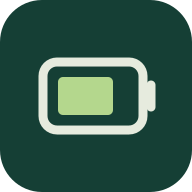

电池日志本地处理iOS ANALYTICS · 本地解析
看看日志里的电池数据
读取你选择的分析日志，查看电池记录。
文件留在设备内，不会上传。
导入分析日志
从「文件」选择 Analytics 开头的日志，包括 .ips.ca.synced
✓ 无上传 · 无账号 · 仅在本机读取
尚未选择文件
正在准备离线功能…
分析结果
查看原始字段与来源
可能的硬件标识
这些是日志中出现的代码或文本，并非硬件检测。无法据此可靠判定供应商、生产批次、零件真伪或是否更换过。
使用帮助
如何获取分析日志
- 打开「设置 → 隐私与安全性 → 分析与改进 → 分析数据」。
- 寻找 Analytics 开头的日志，用分享按钮保存到「文件」，再在这里选择。
- 文件是否生成、包含哪些字段，取决于系统版本和分析设置；开启共享分析会向 Apple 发送数据，请自行决定。
添加到主屏幕与离线使用
在 Safari 分享菜单中选择「添加到主屏幕」。首次联网打开并看到“离线资源已就绪”后，即可在断网时打开。系统仍可能清理网站缓存；离线功能无法保证永久保留。
隐私与结果说明
本工具不发送、保存或记录你的文件、文件名与分析结果；关闭或清除页面后，当前内存结果会释放。离线缓存仅包含应用代码和图标，不包含日志。首次加载和更新会向网站托管服务请求应用资源，托管服务可能记录 IP 等访问元数据。
iOS Analytics 的电池字段没有稳定的公开规范。本工具使用有限字段别名，展示来源，保留冲突，不把缺失值当作 0。容量的原始单位和含义需要依具体日志确认。结果不等同于 Apple 设置中的电池健康或维修诊断。